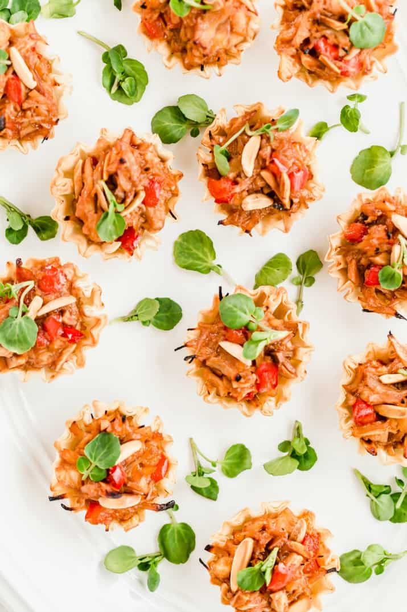

Chicken Phyllo Cups

Description
Chicken appetizers in mini phyllo shells made with shredded chicken, sautéed veggies, and sweet & sour sauce.
recipe from Celebrations at Home Blog
Ingredients
- 2 packages frozen phyllo cups
- 1/2 cup slivered almonds, lightly toasted
- 2 Tablespoons light soy sauce
- 2/3 cup jarred Sweet & Sour sauce (from Asian cooking section)
- 2 cups cooked chicken, chopped
- 1/2 cup chopped onion
- 1/2 cup chopped red bell pepper
Directions
- Saute red bell pepper and onion in the oil, over medium heat until tender.
- In a large bowl, combine vegetable mixture with chicken, sweet & sour sauce, almonds, and soy sauce. Cover and refrigerate until ready to use.
- Heat oven to 400 degrees. Fill phyllo cups with chicken mixture and bake for 8-10 minutes or until filling is hot.
Cooks Notes:
- What kind of chicken to use?
- You can use premium canned chicken to make this recipe super simple
- You can boil your own chicken breasts
- You can use a prepared rotisserie chicken from the grocery store. Just make sure it’s the classic flavor without additional seasonings.
- How to toast almonds?
- Preheat the oven to 375 degrees. Spread nuts in a single layer, onto a baking sheet. Bake about 5-6 minutes, watching to make sure they don’t over cook.
back to main page